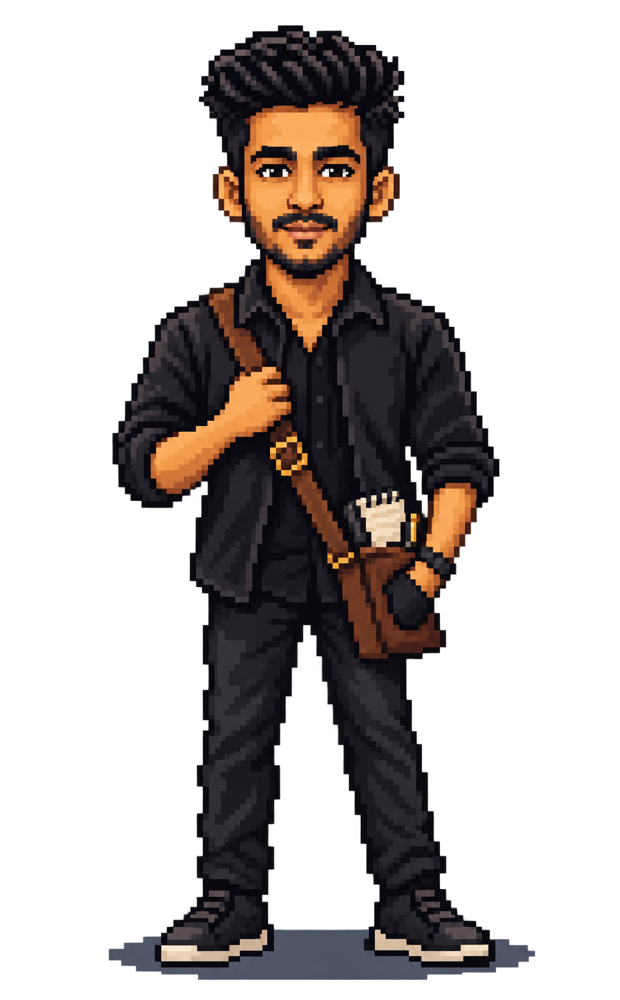

Backend & GenAI engineer
Engineering systems. Writing worlds.
Backend and GenAI engineer. Five years building with .NET, SQL Server and Azure. A storyteller after hours.

08 / Explore further
Choose a world.
Experience, intelligent systems, life beyond code, and the person behind it all.
HOLD